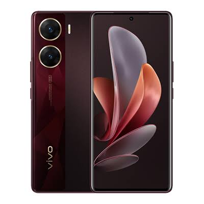

VIVO V29e 5G (Artistic RED,128) (8 GB RAM)Brand VIVO
Operating System Funtouch OS 13 Global
RAM Memory Installed Size 8 GB
CPU Model Snapdragon
-20% ₹39,999.00M.R.P
About this item
Brand VIVO
Operating System Funtouch OS 13 Global
RAM Memory Installed Size 8 GB
CPU Model Snapdragon
Memory Storage Capacity 128 GB
About this item
Store upto 6000 photos
Snapdragon 695 | Octa Core Processor | 2.2 GHz Clock Speed
Powerful Performance. No Hang Phone
64MP + 8MP Rear Camera
DSLR Like Pictures & Great Zoom
50MP Front Camera
Attractive Selfies with Clear & Sharp Colours
6.78 inch Full HD+ AMOLED Display
Immersive Display. Enhanced Viewing Experience
5000 mAh Battery
Charging that can last up to 2 days*
Performance & "No Hang" Claim: The Snapdragon 695 Octa-Core processor paired with 8 GB RAM handles standard multi-tasking (like switching between social media, YouTube, and browser tabs) without lagging. While it runs everyday tasks smoothly, it is a mid-range processor rather than a high-end gaming chi